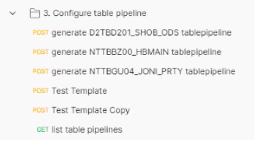

Data Integration (DI) Layer
Data Integration (DI) is the gateway for incoming data into the Data Integration Hub (DIH) system. The DI components are delivered as part of the DIH Package.
DI contains four components which are responsible for reading and analyzing Kafka messages and for pushing them into the Space.
DI Layer Overview
The DI Module is illustrated as follows:
1. Apache Flink
uses Apache Flink as it is an open source framework an distributed processing engine for stateful computations over unbounded and bounded data streams. Flink is designed to run in all common cluster environments, performing computations at in-memory speed and at any scale. It is also a powerful and fast framework for stream processing. It also allows deployment of different types of applications at run-time. In addition, Flink supports streaming and batch mode, which is useful for periodic batch updates. One of the most common types of applications that are powered by Flink are Data Pipeline Applications, which is why we chose to use it in our Smart DIH solution.
Extract transform load (ETL) is a common approach used to convert and move data between storage systems. Often, ETL jobs are periodically triggered to copy data from transactional database systems to an analytical database or data warehouse. Data pipelines serve a similar purpose as ETL jobs in that they transform and enrich data and can move it from one storage system to another, However, they operate in a continuous streaming mode instead of being periodically triggered.
Additional Information: Apache Flink.
2. Metadata Manager (MDM)
The Metadata Manager (MDM) is a stateful data service which communicates with external components via REST APIs. It can be deployed as a standalone application. It uses Zookeeper (ZK) as a persistent data store.
Functionality
The MDM stores, edits and retrieves information for the following:
-
The source table structure
-
The structure mapping to the space type
-
The data types conversion maps
-
The configurations of the DI Manager and Pipeline, which are DI layer components
-
The pluggable CDC templates
-
The created and dropped types in the Space
The MDM refreshes its metadata on-demand from sources into the MDM data store (ZK). The MDM compares and repairs stored metadata against created objects and in Space. The MDM also provides information about stored metadata over REST to the UI and DI Manager.
Diagram
MDM Swagger
The MDM Swagger URL is: <di-host>:6081/swagger-ui
From this URL run the REST command for storing and retrieving information to and from the MDM.
3. DI Processor
The DI Processor is a Java library deployed to the Flink cluster. It is operated by the Flink Task Manager and is part of the Flink job. It is used to process Kafka messages and automatically identifies the consumed message format based on a pluggable CDC template. It converts messages into a Space document and writes the Space document to the Space.
Flow

-
Parsing Kafka messages
-
Determining source table information
-
Determining CDC operation type (INSERT, UPDATE or DELETE)
-
Extracting all column data from the parsed message.
Extraction information is provided by MDM service
Extraction information includes names of attributes, their types and json path used to extract the values
The SpaceDocumentMapper is responsible for converting the table row into corresponding SpaceDocuments which is stored in the OpDoc entity together with the operation type.
The conversion is performed according to the source table name. Multiple types of SpaceDocuments can be generated from a single table row.
Conversion may include:
OpDoc
The OpDoc entity contains the following information:
Example:

Keyed by partition id
This is the process that attached a space partition ID to each OpDoc according to the SpaceType routing definition.
Time window aggregation
The process aggregates all OpDocs received during a certain time period for efficient space write operation.
Write to Space
At this phase, all aggregated OpDocs are written to the appropriate partition in space asynchronously using the space task execute mechanism.
4. DI Manager
The DI manager is an interface for communicating with Flink. It also communicates with external components such as UI and MDM via REST API. In addition, the DI Manager retrieves a correct schema and tables structure from a Source of Record (SOR) and stores it in the MDM.
The DI Manager-Flink operations are:
-
Creating, editing and dropping Flink jobs
-
Starting and stopping Flink jobs
-
Getting Flink's job status
Manager Swagger
The DI Manager Swagger URL is: <di-host>:6080/swagger-ui
From this URL run the REST command for retrieving information from the SOR, storing it in the MDM and to create, stop and start Pipelines.
5. DI Activation
DI can be activated by the SpaceDeck UI or via Postman. Using SpaceDeck, the tools can be defined to bring legacy System of Record (SoR) databases into the in-memory data grid that is the core of the GigaSpaces systems.
Create and control pipelines via Postman:

{kind=link}